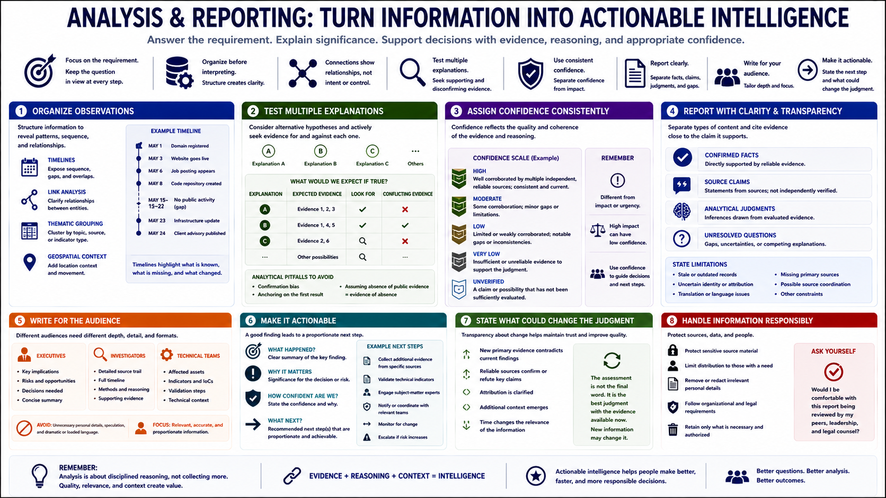

Analysis and Reporting
Connecting to LMS... Progress: in progress

Narration
Analysis turns collected information into intelligence by answering the requirement and explaining significance. Organize observations before interpreting them. Timelines can expose sequence and gaps. Link analysis can clarify relationships, but a visual connection is not proof of control, intent, or wrongdoing.
Test multiple explanations. Ask what evidence would be expected if each explanation were true, and search for both supporting and disconfirming observations. Be alert to confirmation bias, anchoring on the first result, and mistaking absence of public evidence for evidence of absence.
Assign confidence using a consistent method. Confidence communicates how strongly a judgment is supported by reliable evidence and sound reasoning. It is distinct from impact or urgency. A high-impact possibility may have low confidence and still justify a measured request for more information.
Reports should separate confirmed facts, source claims, analytical judgments, and unresolved questions. Cite evidence close to the claim it supports. Explain limitations such as stale records, uncertain identity, translation issues, missing primary sources, or possible source coordination.
Write for the audience. Executives may need concise implications and decisions. Investigators may need a detailed source trail and timeline. Technical teams may need affected assets, indicators, and validation steps. Avoid unnecessary personal details and dramatic language.
A finding is actionable when the recipient understands what happened, why it matters, how confident the assessment is, and what proportionate next step is recommended. Responsible reporting also states what could change the judgment and how sensitive information should be handled.